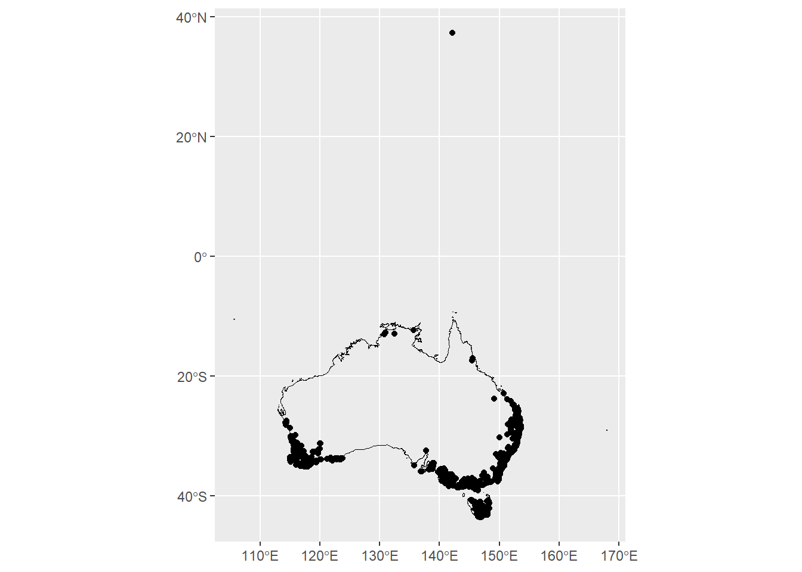

library(galah)
banksia_serrata <- galah_call() |>
galah_identify("banksia_serrata") |>
galah_filter(year > 2022) |>
atlas_occurrences()17 Geospatial data
This chapter is about issues with spatial coordinates, such as recorded in more than one format within the same column (some entries in lat-long and others in UTM) etc.
By now, you may have flagged records as being taxonomically incorrect, it’s important to keep those in mind as you go through the spatial cleaning steps as you might learn more about those records. We will discuss some different ways to check for spatial outliers as well as the removal of records in certain geographic areas known to be problematic.
17.1 Coordinate precision and uncertainty
Coordinate precision describes the consistency of values if one were to record the coordinates of the same location, multiple times. Coordinate precision can vary between data sources and recording equipment. For example, coordinates recorded with a GPS unit or a phone generally has higher precision compared to those manually determined from locality descriptions.
Depending on the scope of your research question, you may need to limit your occurrence data to a certain level of coordinate.
We recommend first including coordinatePrecision in your download query and excluding???? its completeness and range before you exclude any data.
library(galah)
library(skimr)
banksia_serrata <- galah_call() |>
galah_identify("banksia_serrata") |>
galah_filter(year > 2022) |>
galah_select(group = "basic", coordinatePrecision) |>
atlas_occurrences()
# banksia_serrata |>
# select(coordinatePrecision) |>
# skim()
# Filter by number of decimal places
# banksia_serrata |>
# filter(coordinatePrecision < XXX) https://besjournals.onlinelibrary.wiley.com/doi/pdfdirect/10.1111/j.1365-2664.2007.01408.x
17.2 Coordinate Uncertainty
Alternatively, you can refine your data using coordinate uncertainty which describes the possible circular area in meters where the true location is in.
banksia_serrata <- galah_call() |>
galah_identify("banksia_serrata") |>
galah_filter(year > 2022) |>
galah_select(group = "basic", coordinatePrecision, coordinateUncertaintyInMeters) |>
atlas_occurrences()
# Filter by number of decimal places
# banksia_serrata |>
# filter(coordinateUncertaintyInMeters < XXX) 17.2.1 Missing coordinate data
If your research question requires spatial information, then it may be useful to exclude records that are missing coordinates data. Many spatial analytical tools are not compatible with missing coordinate data. We recommend tallying and identifying the rows that have missing data before excluding.
You can use drop_na() to remove missing values from your dataset.
library(dplyr)
# Identify missing data in coordinates
banksia_serrata |>
filter(is.na(decimalLatitude) | is.na (decimalLongitude))
# Excluding them
banksia_serrata |>
tidyr::drop_na(decimalLatitude, decimalLongitude)17.3 Coordinate correction
Some of these steps may have been completed in a pre-cleaning step, however it’s now time to be more rigorous. As always we’ll start with fixing data before discarding, many coordinates issues can be solved with data manipulation instead of discarding:
Flipped coordinates: Flipped coordinates typically appear as a clustering of points, whereby swapping the latitude and longitude will place the coordinates where they are expected. (Jin and Yang 2020)
#example map of some flipped coordinates (what to look for)
# https://www.gbif.org/occurrence/3013406216 this has flipped coordinates, which GBIF has corrected
# https://www.gbif.org/occurrence/search?q=mammalia&continent=SOUTH_AMERICA&has_coordinate=true&has_geospatial_issue=false&issue=PRESUMED_SWAPPED_COORDINATE&advanced=1. ## the issue and flag is called 'presumed swapped coordinate' Numerical sign confusion: As with flipped coordinates, if there is a clustering of points mirrored to another hemisphere, consider swapping the sign and correct rather than discarding the points.
#example map, like coordinates off the coast of japan
# https://biocache.ala.org.au/occurrences/search?q=lsid%3Ahttps%3A%2F%2Fid.biodiversity.org.au%2Ftaxon%2Fapni%2F51360942&qualityProfile=CSDM&radius=50&lat=35.66845370835343&lon=138.9990234375#tab_recordsView
# eucs <- galah_call() %>%
# galah_identify("Eucalyptus") %>%
# galah_filter( year == 2005,
# dataResourceName == "The University of Melbourne Herbarium (MELU) AVH data") %>%
# atlas_occurrences()Country field doesn’t match coordinates: The coordinates could be wrong or just the country listed.
## this doesnt seem to be very common- atleast not in ALA data- because there is no neighboring country
# https://biocache.ala.org.au/occurrences/a34fca43-9e7c-4b37-8fe4-07cc18369465 Australian coordinates, country listed as Trinidad and Tobago
# https://www.gbif.org/occurrence/search?advanced=true&continent=SOUTH_AMERICA&geometry=POLYGON((-78.74961%20-8.25249,-76.29838%20-8.25249,-76.29838%20-4.74121,-78.74961%20-4.74121,-78.74961%20-8.25249))&has_coordinate=true&issue=COUNTRY_MISMATCH&locale=en&q=reptilia # GBIF example- reptiles located in Peru, originally recorded as Ecuador17.3.1 Quick visualisation
One of the most straightforward ways to check for spatial errors is to plot your data onto a map. More obvious spatial errors are much easier to spot visually.
library(ggplot2)
library(ozmaps)
library(sf)
# Retrieve map of Australia
aus <- st_transform(ozmap_country, 4326)
# Remove missing coordinates in Banksia data
# Then transform into 'sf' object
banksia_sf <- banksia_serrata |>
tidyr::drop_na(starts_with("decimal")) |>
st_as_sf(coords = c("decimalLongitude", "decimalLatitude"),
crs = 4326)
# A quick plot
ggplot() +
geom_sf(data = aus, colour = "black", fill = NA) +
geom_sf(data = banksia_sf)
17.4 Coordinate cleaning
Once you have fixed everything you can, it’s time to remove records that still have errors. This doesn’t mean removing all outliers, you must have more than “it’s far away from the others” to justify a records removal.
Remove records where longitude and latitude are equal: High likelihood that this is not where the record was recorded and, check first, however likely will need to remove
Remove records with zero coordinates: When plotting it on a map, zero coordinates will be found around the point at zero latitudes and longitudes. These records will not accurately represent their valid location and must be removed.
#zero coordinates acacia
#https://biocache.ala.org.au/occurrences/search?q=lsid%3Ahttps%3A%2F%2Fid.biodiversity.org.au%2Ftaxon%2Fapni%2F51382879&disableAllQualityFilters=true&qualityProfile=ALA&fq=spatiallyValid%3A%22false%22&radius=25&lat=-0.024032592068740033&lon=-0.06591796875#tab_recordsView 17.5 Remove records plotted away from the known area of distribution of the species.
It is essential to check the metadata to ensure that it is a data entry error and not a real outlier. In some cases, it’s worth checking the literature before discarding records like these. These can also be mis-identified species, if you’re working with data from many species, and you find a species point in amongst the environmental bounds of a similar looking species it might be worth going back to the original record and taking a closer look. However, if no images exist it might be difficult to determine if it is a taxonomic or spatial issue.
17.5.1 Remove records with coordinates assigned to country and province centroids
Centroids are common when records are being assigned from georeferencing based on vague locality descriptions or from incorrect georeferencing. Sometimes, records are erroneously entered with the physical location of the specimen or because they represent individuals from captivity or grown in horticulture, which were not clearly labelled as such.
17.5.2 Remove records from biological institutions
such as botanic gardens, zoos, country capitals, biodiversity institutions, urban areas, and GBIF headquarters. In some cases these records will haven actually been recorded at a zoo for example, in other cases this is often incorrectly georeferenced records. They can be tricky to spot but there are a few packages that deal with centroid data. Exploratory visuals can also help support findings, making it easier to spot clusterings of points.
In a few cases, zoos and botanic gardens might be where the record was sighted. However, in this case, it is not naturally occurring and should be removed. Records in urban areas may not want to be removed by everyone, but it is essential to note that it could be old data or have vague locality descriptions.
Remove records outside of the country of interest: In some cases, records outside the country of origin may be outliers. In other cases, they may be perfectly valid. It is important to analyze case-by-case and remove the record if necessary.
17.5.3 CoordinateCleaner
This package probably worth looking at.